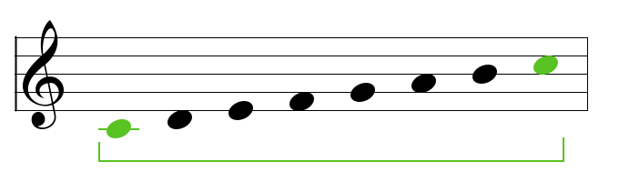

在上一讲中，我们借助“内核音（Kernel）”这一概念深入剖析了旋律中各个单音的内在性格。那是一项精确到微观单音维度的精细工作。本次我们重新将视线拉回到宏观大局，重点考察在主歌（Verse）、副歌（Chorus）等乐段展开中，乃至整首作品的宏观流向中，音符是如何被统筹调度的。
 1. 考量音域的配比规划
1. 考量音域的配比规划
当我们全身心投入歌曲创作时，往往很容易情不自禁地把旋律越写越宽。一会儿想来个大跳进，一会儿又忍不住顺着音阶一路高歌猛进，结果导致旋律音域像脱缰野马般无限扩张。 然而，无论何种乐器，听感最佳、表现力最出彩的黄金音域始终是有限的。特别是在人声歌曲中，我们必须时刻受制于目标歌手实际声域的客观物理约束。更重要的是，“勉强能唱上去的极限音区”与“能够唱得优美动人、富有感染力的有效音区”往往不可同日而语。

因此在本文中，我们将探讨如何合理规划并调配旋律的音域空间，并运用这套方法对经典作品展开实战剖析。
划分区间（Segment）
首先，我们把在纵向维度上无限延伸的音高阶梯切割成若干适度的“区间（Segment / 区块）”，从而将音域抽象化为易于把握的“音区版图”。作为大区块的最自然基准，莫过于以中心音 Do 到上方八度 Do 构成的这 1 个八度空间。


在这里，我们并不将“Do～Ti”视作一组，而是将“Do～Do”完整包含视为一个整体块。也就是说，端点上的 Do 扮演了连接上下两个相邻音区的“铰链（合页）”或“拼接边缘”的角色。

不踩踏作为“铰链”的 Do 音，直接跨越它飞跃到另一个音区，在乐理中正是所谓的“跨音区大跳（Stride）”。
以 Sol 作为分界线
进一步地，我们以远离 Do 的另一核心稳定音——Sol 作为分水岭，将该八度再度一分为二，以此作为分析的最小基础单位——区间（Segment）。

Sol 同样被视为同时隶属于上下两个区间的公共交界音。这样一来，下方区间包含 5 个音（Do-Re-Mi-Fa-Sol），上方区间包含 4 个音（Sol-La-Ti-Do）。虽然音数上存在看似不均等的落差，但从实战分析与创作操作的角度来看，这样划分具有最高的实用价值[1]。 我们将这种把一个八度在上下方向二分为若干“区间（Segment）”作为基本单元、以此对旋律音域进行剖析的方法，称为音区划分法（声域区分法）。 这一方法属于“自由派”独创的分析视角，区间的划定本身也是出于“最便于实战与分析”的实用考量。因此，“音区划分法”与其说是一门高深的教条理论，不如说是一套行之有效的分析方法论（Methodology）。 接下来，让我们看看在真实的音乐作品中，各个区间是如何被调度与消耗的。
2. 单区间结构（1-Segment）
如果把一整个乐段的旋律完全局限在单个区间内，听起来往往会相当逼仄局促。包含 5 个音的“Do-Re-Mi-Fa-Sol”区间尚有一些闪转腾挪的空间，而仅有 4 个音的“Sol-La-Ti-Do”区间能做出的变化就极为有限了。
在前面动机一讲中提到过的 RADWIMPS《おしゃかしゃま》（释迦牟尼），就是一首旋律音高起伏被极度克制的作品，全曲近乎严格践行着“一个乐段仅消耗一个区间”的极端克制美学。主歌的大部分段落甚至仅靠 Do、Re、Mi 三个音在循环往复！让我们将各个乐段所占用的音区区间可视化：

暂时隐去微观线条细节，我们用简化的方块来直观呈现区间的阶梯式消耗。可以看出，随着情绪的层层递进，歌曲整齐划一地逐级更替音区区间；在进入副歌的前一瞬间，旋律猛然刺入上方更高区间，极具导向性地引领了情绪的高潮爆发。 在朋克摇滚（Punk Rock）或电子舞曲（EDM）等高度依赖极简重复律动的风格中，像这样“一段一个区间”完全能够打造出极具冲击力的作品。
在这首 EDM 范例中，从情绪蓄力构建（Build-up）到能量释放（Drop），仅仅依靠“Do、Re、Mi”三个音符就硬生生撑起了全场高潮。在强劲有力的音响与律动轰鸣加持下，旋律哪怕几乎不大幅移动，也丝毫不影响听觉上的爽快淋漓。 然而，倘若你希望在流行歌曲中呈现出更宽广、更细腻的抑扬顿挫，单区间的容量便捉襟见肘了。接下来让我们看看更为主流的双区间（2-Segment）消耗范式。
3. 双区间结构（2-Segment）
一旦允许使用两个区间，旋律的表现维度瞬间就会得到几何级的释放。在占用两个区间的语境下，区间的组合方式恰好有两种经典形态：要么是以“Do～Do”构成的 1 个八度，要么是以“Sol～Sol”构成的 1 个八度。

从物理音程跨度来看，两者完全都是标准的 1 个八度，然而它们的“阵型骨架（Formation）”却截然相反：“Do～Do”的形态是向着两端的中心音 Do 延展散开，并在外缘形成收束；而“Sol～Sol”则是向着正中央唯一的中心音 Do 聚拢，由内向外形成合抱收束。

这两种阵型所营造的曲调意境差异极大，是创作中极其关键的底层决策。虽然可以给它们赋予华丽的名称，但为了直观起见，我们暂且称之为“外向型双区间（外向2区）”与“内向型双区间（内向2区）”[13]。
外向型双区间（Authentic / 正格型）
“外向型双区间（Do～Do）”的特点在于：终极归宿（中心音 Do）分布在最上与最下的两端，而中央则稳坐着 Mi 和 Sol 两个稳定内核。因此，其最标准的骨干运作范式就是：以中央的 Mi 或 Sol 作为起跑线，当需要平复收拢时向下行进终结于低音 Do，当需要激昂爆发时则向上攀升终结于高音 Do。

位于正中间的 Sol 扮演着既可上攻亦可下探的中立枢纽。旋律究竟是在 Sol 的下方徘徊还是在其上方盘旋，直接粗暴地划定了整首乐段的情绪高潮水准。我们通过经典实战来体会：
HoneyWorks 的爆款名作《可爱对不起》（可愛くてごめん），其副歌音域极其工整地恰好锁死在一个八度内，是“外向型双区间”教科书级的典范。全曲调性为 D 大调，首调唱名对应如下：

副歌一开嗓，仅仅在“Chu! か”两个音符之间，就骤然从高音 Do 狠狠砸向低音 Do，完成了一记惊心动魄的八度大跳跃；紧接着一句“ごめん”又立刻窜回高音 Do，展现了极为激烈的上下两极往返。 特别耐人寻味的是副歌每一轮循环中 4 次唱到“ごめん”的尾音“ん”的落点轨迹：高音 Do → 居中的 Sol → 高音 Do → 低音 Do。Do、Sol、Do 这三个作为区间分界线的稳定音，行云流水般充当了三种截然不同情绪张力的着陆平台，将外向双区间的结构潜力发挥得淋漓尽致。
内向型双区间（Plagal / 变格型）
与此相对，“内向型双区间（Sol～Sol）”的阵型则是：独一无二的中心音 Do 稳坐中军帐，其余所有音符从上、下两个方向将其团团合抱。

与“外向型”相比，内向型具备两个极其强悍的先天优势：首先，中心音位于正中，因此旋律可以在其上方与下方之间肆无忌惮地实施跨越中心音的大跳（Stride）；其次，倾向音 Fa 在此阵型中处于相对极高的制高点位置，因此能够极其惊艳、极具戏剧性地展现**“Fa → Mi”的悬挂与解决**。
Yorushika（ヨルシカ）的名曲《所以我放弃了音乐》（だから僕は音楽を辞めた），其 A 段和 B 段主歌便完美严谨地契合在这一“内向型双区间”框架中，清晰地向我们展示了内向型阵型所特有的音乐叙事气质。

剖析这段旋律，你会发现大量在居中的中心音 Do 与上下两个边缘 Sol 之间的大跳穿梭。旋律不断向上下两侧撕扯伸展，随后又如潮水般向中央的 Do 汇聚收拢，形成了一波又一波连绵不绝的波澜。同时，乐句中高频出现了“Ti → Do”的半音导音解决；而在“外向型”中，“Ti → Do”已经顶到了整个音区的最高天花板，显然无法像这样高频从容地调度。 两端的 Sol 虽然是稳定音，但由于缺乏终结性的调性锚定感，反而散发着强大的张力。旋律只有回撤到内侧的 Do 时，才能获得真正踏实的尘埃落定。这种音区布局，与作品底层那种“既对外充满尖锐刺痛，又在内心深处自我封闭纠结”的幽暗情感达成了不可思议的灵魂共振。
外向 vs 内向的得失权衡
由此可见，即便同样占用 2 个区间（1 个八度），所催生出的旋律性格却有着云泥之别：
- 外向型（Do～Do）：由于缺乏跨越中心音的大跳空间，往往容易陷入“去往高音 Do 必须往上爬、去往低音 Do 必须向下走”的相对单一路线。但其终极爆发力极强，在恰当时机一旦打破天花板，能瞬间创造出极其震撼的展开。
- 内向型（Sol～Sol）：逼近中心音的路线极其丰富多元，穿插跳进灵动自如；但潜在的短板在于“无论怎么折腾，若想彻底落定终结，最终只能回到正中间唯一的 Do”。这就需要创作者更成熟地调度 Mi 和 Sol 等辅助稳定音来避免终结感的单调。
两种形态各擅胜场。而一旦我们将活动版图进一步拓展到 3 个区间，这些局限性都将被迎刃而解。接下来让我们审视更为开阔的三区间结构。
4. 三区间结构（3-Segment）
当一个乐段被赋予 3 个区间的纵深时，在现代编曲中已经称得上是相当奢华大气的调度了。面对这种结构，最通透的理解视角是：依然牢牢以刚才的“双区间”作为基本盘骨架，将溢出并探入第三区间的那些超高音或超低音，视作点睛之笔的戏剧性重音（Accent）。
“外向型”的向上或向下延伸
我们首先来看以“外向型双区间”为基底，向外突破拓展为 3 个区间的典型案例。
Official髭男dism 的现象级大热单曲《Pretender》，其 A 段与 B 段主歌双双拉满并占尽了整整 3 个区间。其绝妙之处在于：两者均以“外向型双区间”为骨架，A 段选择向下突破，而 B 段则选择向上挺拔，形成了精妙绝伦的结构对仗！

基本盘依然在依靠“外向型”的核心魅力——上下两端的中心音 Do 之间的跌宕起伏来构建张力，特别是直接从上方高音 Do 凶狠跃迁至下方低音 Do，成为了这首歌最具辨识度的标志记忆点（Hook）。 在 A 段中，仅在“ずっとそばに（永远在身旁）”等极少数沉吟之处，旋律探入更低阶的区间唱响低音 La 和 Sol；而在 B 段中，则恰恰在全段情绪最喷薄的高潮核心词“伝えられたらいいな（如果能向你倾诉该有多好）”处，旋律毅然跨越天花板，轰入更高一层的第三区间！ 回看全局：虽然这是一首音域宽广、跳跃极为频繁激烈的硬核作品，但其主体大部始终严谨规整地锚定在双区间内，唯独在乐段终盘的决战时刻，才将第三区间作为王牌重音倾囊抛出。 正因如此，如此大起大落的激烈旋律听起来不仅毫不杂乱，反而充满了严丝合缝的“统一感”与“抑扬顿挫的张力”，呈现出无可挑剔的抓耳流行度与叙事史诗感。这种对音区平衡的把控感，展现了顶级作曲家的深厚功力。
“内向型”的向上拓宽
接下来看看将“内向型双区间”向上突破延伸的形态。
yama 的爆款热单《春を告げる》（宣告春天），全曲通篇流淌着浓郁的四七拔五声音阶线条。旋律一次又一次精准落定在正中央的中心音 Do 上，流淌着纯正的“内向型”底色；然而，高频反扑轰炸的高音“La-Sol”如重拳般袭来，为整首歌注入了极具现代感的炫目华彩。 这首歌在所有乐段中几乎从始至终贯穿着这套 3 区间阵型系统，仅在 B 段偶发性地填入倾向音 Fa 来制造呼吸反差（严格来说 A 段曾有一瞬间微弱擦碰了下方第 4 区间，但转瞬即逝）。

从某种视角来看，这也可以被理解为是在“外向型”的下方拼接了一个新区块。通过将这一阵型可视化，我们可以清晰洞察到其底层自始至终高度统一的循环逻辑。这种强烈的单系统循环感（Loop-based），在骨子里其实与现代电子舞曲的构建逻辑有着异曲同工之妙。
音区的绝对宽度 vs 动态跃迁
回顾开篇提到的《おしゃかしゃま》（释迦牟尼），随着乐段层层推进，使用的区间逐级爬升，全曲累计加起来同样消耗了 3 个区间。然而，同样的 3 个区间，消耗调度的节奏策略不同，带来的战略效果天差地别：

- 《释迦牟尼》的策略：牺牲单个乐段内部的起伏丰富度，换取向副歌一路狂飙猛进、节节攀升的终极动态跨度。极度契合那种旨在引导全场乐迷在副歌疯狂甩头沉浸的硬核摇滚作品。
- 《宣告春天》的策略：虽然乐段之间的音区跨度相对平缓，但保证了每一个乐段随时随地都保持在极高的能量水准。无论从哪一个片段截取 15 秒（短视频时代），听起来都极其饱满抓耳。可以说是完美契合流媒体与短视频传播时代的音区阵型策略。
四区间与五区间（超宽音域）
对于机能极其强悍的歌手，单个乐段消耗 4 个甚至更多区间也是常有的事。即便面对如此宽广的音域，我们依然建议大家以“双区间”作为基准中轴线，观察它究竟以多大的频率、向两端突破了多远，如此分析便能化繁为简。
在极度考验声乐机能的 King Gnu 名曲《白日》中，B 段主歌与高潮副歌均跨越了整整 4 个区间。但细看便会发现，其绝大部分核心旋律依然被牢牢包裹在“外向型双区间”内，唯独在情绪跌入谷底的幽微低吟与撕心裂肺的最强声浪爆发时，旋律才坚决地悍然撕破区间的边际。
5. 从歌手音域逆向推导构思
我们在创作实际歌曲时，并非每一次都要追求炫耀极限机能，很多时候我们需要创作“老少咸宜、人人都能轻松跟唱”的作品。在这种场景下，有条不紊的音区区间规划就显得至关重要。
1 个八度以内的音域配置
例如在日本传统儿歌童谣中，绝大多数作品极其精准地将音域锁死在“Do～Do”的“外向型双区间”内。这显然是充分体贴儿童生理声带尚未发育健全、音域狭窄的量身定制之举。
不仅是儿歌，在偶像团体（Idol）或男声摇滚乐队的曲目中，全曲从头到尾严格控制在 1 个八度以内的案例也屡见不鲜。而在这些流行案例中，以“Sol～Sol”或“La～La”为基盘的“内向型双区间”占据了压倒性的主流地位。
虽然受制于试听切片无法听全，但这几首作品整首歌都奇迹般地完全运行在“内向型”的 1 个八度内。让我们再次将整首作品的宏观音域可视化：

虽然各曲实际调性不同导致物理绝对音高有别，但一旦转换为相对的音阶首调视点，其深层的共性便展露无遗： TWICE 的《What is Love?》就是纯粹的标准“内向双区”；Taylor Swift 的《Welcome To New York》更是将音域进一步极限压缩，来自下方的支持仅仅保留了一个“Ti → Do”的半音解决，展现了惊人的克制与利落。 至于“La～La”的跨度虽然在跨度上涉及了 3 个区间，但与“Sol～Sol”对照理解最为通透：它本质上是做了一次战略置换——舍弃了最底部的稳定音 Sol，换取了在全曲最高峰从容使用“La → Sol”这一王牌线条的特权。AKB48 的《无限重播》（ヘビーローテーション）和堀江由衣的《Vanilla Salt》（バニラソルト），均是在副歌最核心的关键节点释放“La → Sol”来铸就全曲的最强记忆峰值。 在流行音乐的叙事展开中，“内向型”由于允许围绕中心音展开上下逢源的博弈与跨音区大跳，通常比拘谨的“外向型”更容易构筑出引人入胜的旋律故事线。
1 个八度 + α 的音域配置
如果能够将音域放宽到比 1 个八度略宽一点点（1个八度 + 1~2度），那么基于前文的逻辑，我们只需考量“究竟是向天空挑高，还是向大地扎根”即可。 例如，原本有些逼仄的“严格外向双区”，只要允许向上或向下各拓展一个音，围绕中心音展开的逼近方式瞬间就能呈爆发式倍增。

这样一来，即便涉及 4 个区间的丰富展开也能从容落地，八度以上的音域空间使得“外向双区”的实用度大幅跃升。
这些作品整首歌的跨度均仅仅是在双区间的八度基础上，向外微微拓宽了 1 到 2 个音符：

乃木坂46 的《Sing Out!》通过将“外向双区”向下拓展，成功获得了在主歌低音区实现低沉的“Ti → Do”解决的能力；AKB48 的《变成樱花树》（桜の木になろう）则反向向上拓宽，用于在副歌实施跃过中心音的跨区跳进。 而在 BTS 的《Dynamite》与 NiziU 的《Make You Happy》中，将“内向双区”向上微调拓宽的核心战略目的，同样是在副歌决战时刻释放势不可挡的“La → Sol”重击记忆钩子。 只要在动笔创作前，心中清晰锚定：“在这段音域内，究竟容纳了几个中心音？”“逼近中心音的路线有哪几种？”“旋律将跨越几个区间展开？”，你就能如同高明的建筑师一般，对全曲的情感脉络与起伏呼吸做到心明眼亮、游刃有余。
总结
- “自由派”将一个八度纵向二分所得的模块作为基础单元来解构音域，这种分析体系称为“音区划分法”。
- 旋律线条所占用的区间位置与跨度宽度如何动态演变，深刻决定了整首歌曲的情绪展开与曲式层次。
- 在实际编曲作曲中，完全可以从目标歌手的实际声乐音域出发，逆向倒推并运筹各个乐段的区间结构与高潮布局。

祝贺你！旋律篇第 I 章到此全部修了圆满达成！接下来你可以自由决定是趁热打铁开启新的篇章，还是留出充裕的创作与扒谱实战期来沉淀巩固。 此外，对于专注于说唱音乐创作的朋友，后文还专门准备了一篇深度探讨说唱音高设定与调性关系的特别加餐。